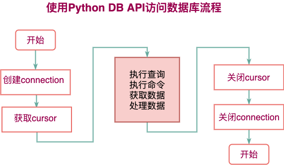

数据库编程
数据库编程¶
1. 概述¶
从前面我们知道数据库概念包含 数据库文件、服务器和数据库客户端 客户端我们之前已经用过的有cmd命令行,sqlyog等程序。
问题: 如何使用客户端将100000行数据插入到数据库?
大家会发现如果用之前客户端几乎是不可能完全这个任务的, 因为我们不可能去构造出那个插入10w行数据的SQL。可是，如果我们有一个功能能够插入一行数据，借助程序强大的特点-重复，就可以轻而易举的就将10w行数据收入麾下。这种通过使用程序代码的方式去连接数据库服务器，通过和服务器进行交互完成对数据库的增删改查的方式，就称为数据库编程。
而此刻学习的pymysql就是一种客户端。
2. Python 中操作 MySQL 步骤¶

如何理解连接 connection 和 游标 cursor connection就像是连接出发地和目的地的 高速公路 cursor就像是在高速公路上的货车-拉货 我们使用游标就可以完成对数据的操作 当我们完成操作完成后就可以停下货车，然后公路再停止使用。
3. pymysql的使用¶
引入模块
1 | |
3.1 Connection 对象¶
- 用于建立与数据库的连接 调用pymysql模块中的connect()方法
1 2 3 4 5 6 7 8 | |
-
关闭连接
conn.close() -
提交数据
conn.commit() -
撤销数据
conn.rollback() -
通过连接获取游标
cur = conn.cursor()返回Cursor对象，用于执行sql语句并获得结果
3.2 Cursor游标对象¶
- 获取Cursor对象
python
# 调用Connection对象的cursor()方法
cur =conn.cursor()
目的: 执行sql语句（使用频度最高的语句为select、insert、update、delete)
- 使用游标执行SQL语句
execute(operation [, parameters ])
执行SQL语句，返回受影响的行数，主要用于执行insert、update、delete语句，也可以执行create、alter、drop等语句
-
关闭游标
cur.close() -
获取结果集中的一条
cur.fetchone()返回一个元组 形如 (1,'妲己',18)
- 获取结果集中的所有
cur.fetchall()执行查询时，获取结果集的所有行，一行构成一个元组，再将这些元组装入一个元组返回 形如((1,'公孙离',20),(2,'妲己',18))
3.3 pymysql完成数据查询¶
1 2 3 4 5 6 7 8 9 10 11 12 13 14 15 16 17 18 19 20 21 22 23 24 25 26 27 | |
4. pymysql增删改¶
1 2 3 4 5 6 7 8 9 10 11 12 13 14 15 16 17 18 19 20 21 22 23 24 | |
关于提交commit commit将修改提交到数据库，保存修改
注意pymysql中数据需要手动提交commit才能保存到数据库中